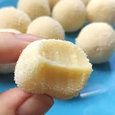
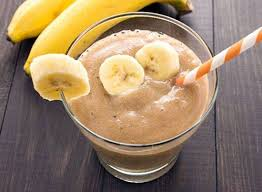

Livro de Receitas
Receita de brigadeiro branco deliciosa

Ingredientes:
- 1 caixa de leite condensado
- 1 caixa de creme de leite
- 1 Colher (sopa) de manteiga
Modo de preparo:
- Coloque o leite condensado e creme de leite na panela e misture bem
- Ligue em fogo baixo e coloque a manteiga
- Mexa em fogo baixo até que consiga ver o fundo da panela ao passar a colher
- Coloque no pote de sua preferência e coloque na geladeira pra resfriar
- Agora basta se deliciar com essa receita
Receita vitamina de Whey com banana

Ingredientes:
- 40g do Whey de sua preferência
- 200ml de leite
- 100g de banana
Modo de preparo:
- Pique a banana em fatias
- Coloque no liquidificador o leite e o whey
- Misture com uma colher até que o whey se dissolva no leite
- Coloque a banana e ligue o liquidificador
- Agora basta se servir e se deliciar